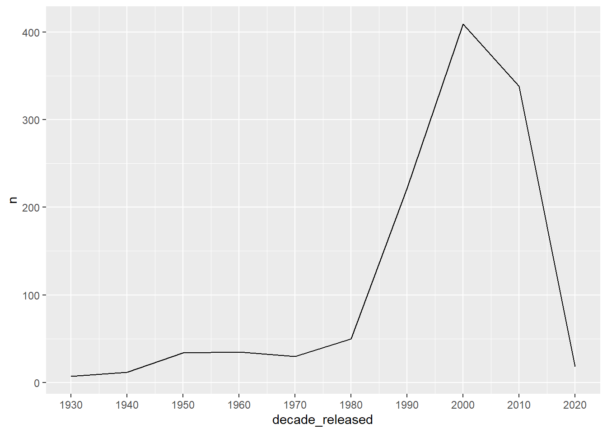
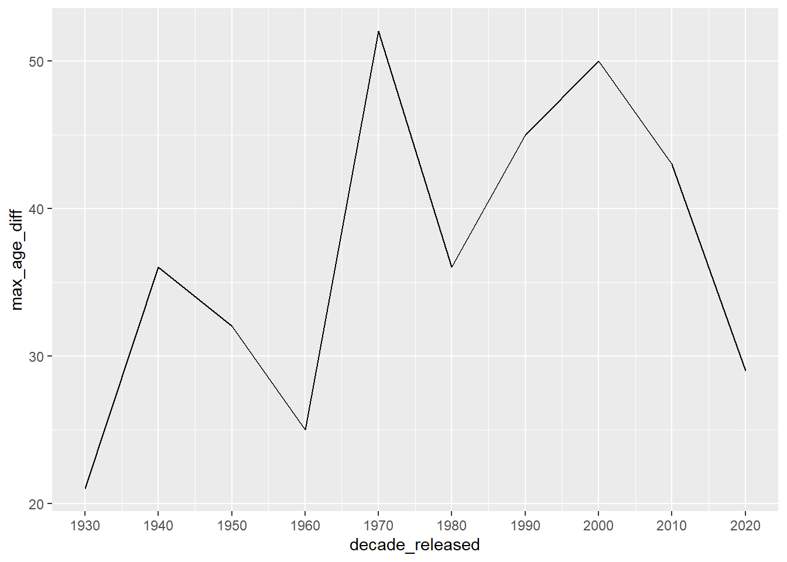
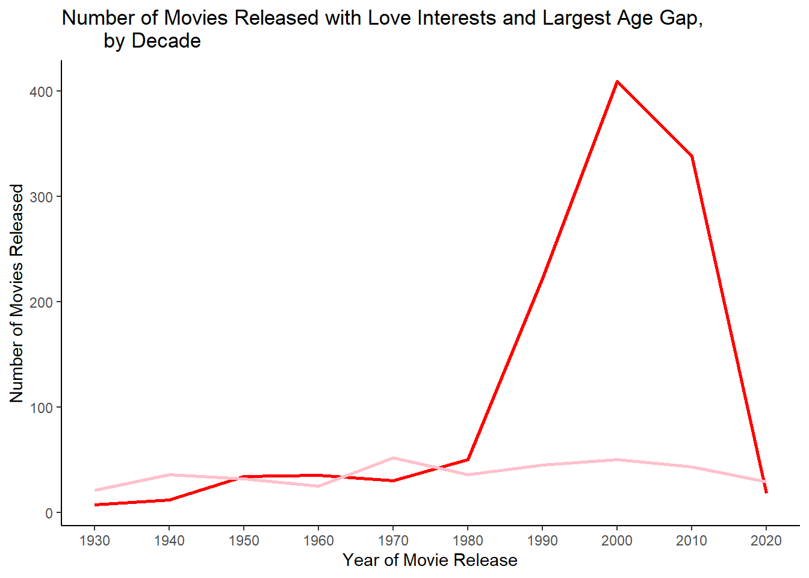
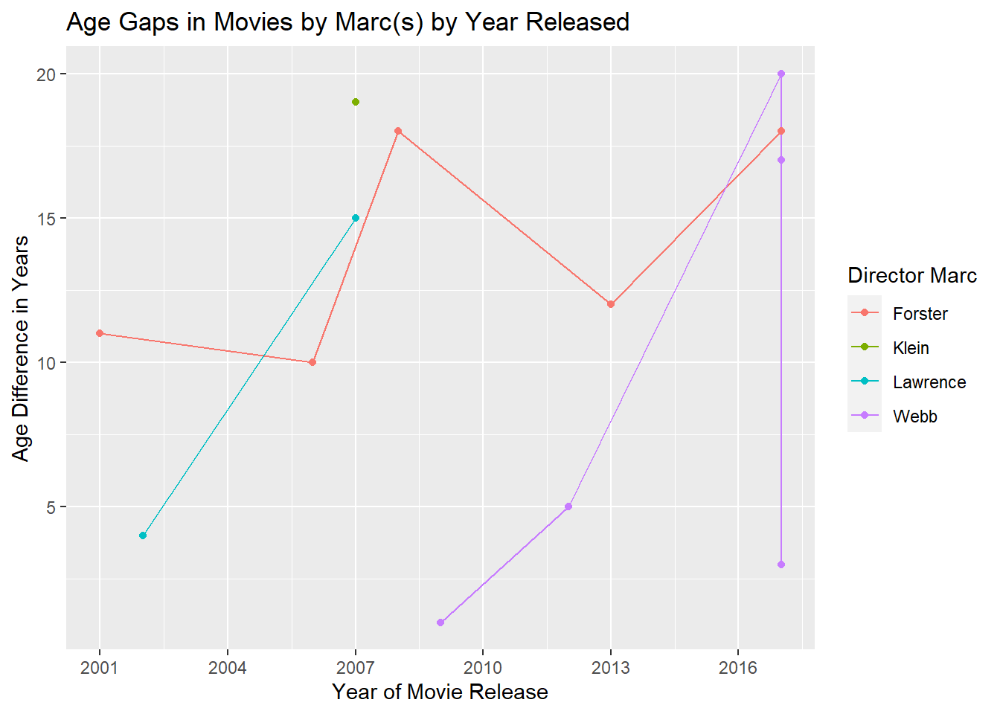

library(here)
library(epiDisplay)
library(tidyverse)
library(plotly)Tidy Tuesday Exercise
This data was obtained from the github Importing the data
age_gaps <- readr::read_csv('https://raw.githubusercontent.com/rfordatascience/tidytuesday/master/data/2023/2023-02-14/age_gaps.csv')
write_csv(age_gaps, here("data/age_gaps.csv"))Let’s start by taking a glimpse at the dataset.
glimpse(age_gaps)Rows: 1,155
Columns: 13
$ movie_name <chr> "Harold and Maude", "Venus", "The Quiet American", …
$ release_year <dbl> 1971, 2006, 2002, 1998, 2010, 1992, 2009, 1999, 199…
$ director <chr> "Hal Ashby", "Roger Michell", "Phillip Noyce", "Joe…
$ age_difference <dbl> 52, 50, 49, 45, 43, 42, 40, 39, 38, 38, 36, 36, 35,…
$ couple_number <dbl> 1, 1, 1, 1, 1, 1, 1, 1, 1, 1, 1, 1, 1, 1, 1, 1, 1, …
$ actor_1_name <chr> "Ruth Gordon", "Peter O'Toole", "Michael Caine", "D…
$ actor_2_name <chr> "Bud Cort", "Jodie Whittaker", "Do Thi Hai Yen", "T…
$ character_1_gender <chr> "woman", "man", "man", "man", "man", "man", "man", …
$ character_2_gender <chr> "man", "woman", "woman", "woman", "man", "woman", "…
$ actor_1_birthdate <date> 1896-10-30, 1932-08-02, 1933-03-14, 1930-09-17, 19…
$ actor_2_birthdate <date> 1948-03-29, 1982-06-03, 1982-10-01, 1975-11-08, 19…
$ actor_1_age <dbl> 75, 74, 69, 68, 81, 59, 62, 69, 57, 77, 59, 56, 65,…
$ actor_2_age <dbl> 23, 24, 20, 23, 38, 17, 22, 30, 19, 39, 23, 20, 30,…Let’s take a look at some summary statistics on age_difference.
age_gaps %>% pull(age_difference) %>% summary() Min. 1st Qu. Median Mean 3rd Qu. Max.
0.00 4.00 8.00 10.42 15.00 52.00 Let’s see how many unique movies are included in the dataset.
age_gaps %>% pull(movie_name) %>% n_distinct()[1] 830There are 830 unique movies.
Let’s also look at how many different directors appear in the dataset.
age_gaps %>% pull(director) %>% n_distinct()[1] 510There are 510 unique directors.
Let’s make a new variable for th the number of movies released each decade in the dataset. We’ll do this by performing integer division using %/% and multiplying by 10.
age_gaps <- age_gaps %>%
mutate(decade_released = 10 * (release_year %/% 10))age_gaps %>%
count(decade_released) %>%
ggplot() + geom_line(aes(decade_released, n)) +
scale_x_continuous(breaks = seq(1930,2020, 10))
We can see that the decade with the most movie releases was 2000.
Let’s create variable for the largest age difference by decade released.
age_gaps <- age_gaps %>%
group_by(decade_released) %>%
mutate(max_age_diff = max(age_difference))
age_gaps %>%
ggplot() +
geom_line(data = age_gaps, aes(x = decade_released, y= max_age_diff)) +
scale_x_continuous(breaks = seq(1930,2020, 10))
Let’s see if we can combine these plots and add some design elements.
plot <- age_gaps %>%
count(decade_released) %>%
ggplot() + geom_line(aes(decade_released, n), color = "red", linewidth = 1) +
geom_line(data = age_gaps, aes(x = decade_released, y= max_age_diff),
color = "pink" , linewidth = 1) +
scale_x_continuous(breaks = seq(1930,2020, 10)) +
labs(x = "Year of Movie Release", y = "Number of Movies Released",
title = "Number of Movies Released with Love Interests and Largest Age Gap,
by Decade") +
theme_classic()
plot 
Let’s make the plot interactive!
remove_buttons <- list('zoom2d','pan2d','lasso2d', 'select2d','zoomIn2d',
'zoomOut2d','autoScale2d','hoverClosestCartesian',
'toggleSpikelines','hoverCompareCartesian')
ggplotly(plot) %>% config(modeBarButtonsToRemove = remove_buttons) Next, let’s switch gears entirely and find out what the most common name is among directors. We’ll need to load tidytext().
library(tidytext)
age_gaps %>% ungroup() %>%
distinct(director) %>%
unnest_tokens(word, director) %>%
count(word, sort = TRUE) %>%
top_n(15)# A tibble: 15 × 2
word n
<chr> <int>
1 john 17
2 david 14
3 michael 13
4 peter 12
5 paul 11
6 george 10
7 james 10
8 robert 10
9 richard 7
10 jon 6
11 kevin 6
12 lee 6
13 mark 6
14 scott 6
15 steven 6Let’s see what the most common names are among directors with a ‘large’ age difference. Let’s use observations with an age difference >= 15 years, which is >= 75th quantile.
age_gaps %>% pull(age_difference) %>% quantile() 0% 25% 50% 75% 100%
0 4 8 15 52 age_gaps %>% ungroup() %>%
filter(age_difference >= 15) %>%
distinct(director) %>%
unnest_tokens(word, director) %>%
count(word, sort = TRUE) %>%
top_n(15)Selecting by n# A tibble: 16 × 2
word n
<chr> <int>
1 john 8
2 david 6
3 michael 5
4 peter 5
5 marc 4
6 paul 4
7 richard 4
8 robert 4
9 scott 4
10 george 3
11 james 3
12 joseph 3
13 lee 3
14 mike 3
15 steven 3
16 thomas 3While the top 5 directors are identical to the previous list, Marc appears in the 6th most frequent among directors of movies with an age difference greater than or equal to 15 years.
Let’s find out which movies these Marc’s directed.
age_gaps %>%
filter(grepl("Marc ", director)) %>%
arrange(desc(release_year))# A tibble: 14 × 15
# Groups: decade_released [2]
movie_name relea…¹ direc…² age_d…³ coupl…⁴ actor…⁵ actor…⁶ chara…⁷ chara…⁸
<chr> <dbl> <chr> <dbl> <dbl> <chr> <chr> <chr> <chr>
1 The Only Liv… 2017 Marc W… 20 1 Pierce… Kate B… man woman
2 All I See Is… 2017 Marc F… 18 1 Jason … Blake … man woman
3 The Only Liv… 2017 Marc W… 17 2 Kate B… Callum… woman man
4 The Only Liv… 2017 Marc W… 3 3 Callum… Kierse… man woman
5 World War Z 2013 Marc F… 12 1 Brad P… Mireil… man woman
6 The Amazing … 2012 Marc W… 5 1 Andrew… Emma S… man woman
7 The Young Vi… 2009 Jean-M… 2 1 Rupert… Emily … man woman
8 500 Days of … 2009 Marc W… 1 1 Zooey … Joseph… woman man
9 Quantum of S… 2008 Marc F… 18 1 Daniel… Gemma … man woman
10 Suburban Girl 2007 Marc K… 19 1 Alec B… Sarah … man woman
11 Music and Ly… 2007 Marc L… 15 1 Hugh G… Drew B… man woman
12 Stranger Tha… 2006 Marc F… 10 1 Will F… Maggie… man woman
13 Two Weeks No… 2002 Marc L… 4 1 Hugh G… Sandra… man woman
14 Monster's Ba… 2001 Marc F… 11 1 Billy … Halle … man woman
# … with 6 more variables: actor_1_birthdate <date>, actor_2_birthdate <date>,
# actor_1_age <dbl>, actor_2_age <dbl>, decade_released <dbl>,
# max_age_diff <dbl>, and abbreviated variable names ¹release_year,
# ²director, ³age_difference, ⁴couple_number, ⁵actor_1_name, ⁶actor_2_name,
# ⁷character_1_gender, ⁸character_2_genderSo, it looks like our filter picked up a sneaky Marc… Jean-Marc. Let’s remove this observation by specifying that the director’s name must begin with Marc.
marc <- age_gaps %>%
filter(grepl("^Marc ", director))
marc %>%
pull(movie_name) %>%
unique() [1] "The Only Living Boy in New York" "Suburban Girl"
[3] "All I See Is You" "Quantum of Solace"
[5] "Music and Lyrics" "World War Z"
[7] "Monster's Ball" "Stranger Than Fiction"
[9] "The Amazing Spider-Man" "Two Weeks Notice"
[11] "500 Days of Summer" Let’s find the average age difference for these Marc-directed love movies
marc %>%
pull(age_difference) %>%
summary() Min. 1st Qu. Median Mean 3rd Qu. Max.
1.00 5.00 12.00 11.77 18.00 20.00 marc %>%
pull(director) %>%
unique()[1] "Marc Webb" "Marc Klein" "Marc Forster" "Marc Lawrence"Let’s also rename the director variable and drop Marc from the rows using str_replace.
library(stringr)
marc$director <- str_replace(marc$director, "Marc ", "")
marc <- marc %>% rename(`Director Marc` = director)marc %>% ggplot(aes(x= release_year, y= age_difference, color= `Director Marc`)) +
geom_line() +
geom_point() +
scale_x_continuous(breaks = seq(2001, 2019, 3)) +
labs(x = "Year of Movie Release", y = "Age Difference in Years",
title = "Age Gaps in Movies by Marc(s) by Year Released")
While my approach to this exercise was obviously silly, I learned a lot about the tidytext package, which I’d never used before, and a useful trick for a function I use regularly!
write_csv(age_gaps, here("data/age_gaps_edited.csv"))